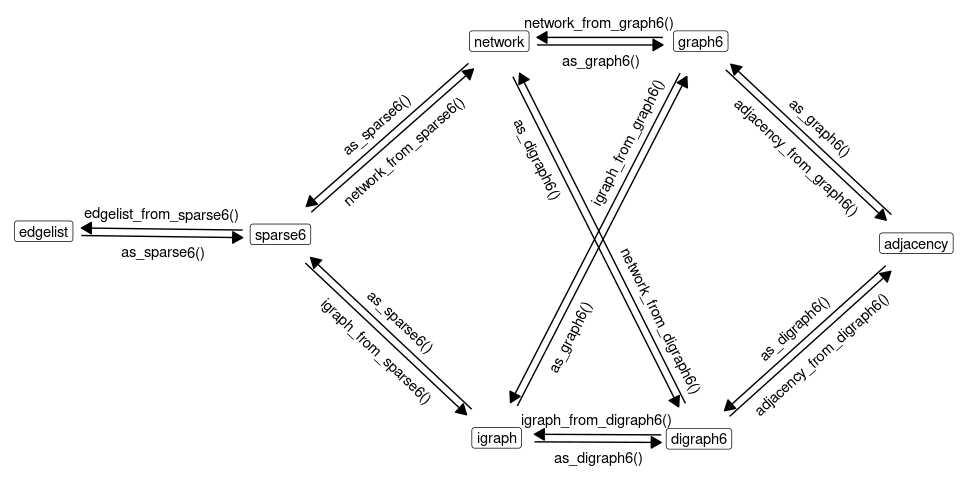

Functions in this package allow for encoding network data as strings of printable ASCII characters and back using ‘graph6’, ‘sparse6’, and ‘digraph6’ formats. This is convenient in a number of contexts, especially when working with large number of graphs. Provided functions allow to directly encode and decode graph data in the form of adjacency matrices, edgelists, network objects and igraph objects to and from these three formats.
What are ‘graph6’, ‘sparse6’ and ‘digraph6’ formats?
‘graph6’, ‘sparse6’ and ‘digraph6’ are formats for encoding graphs as strings of printable ASCII characters due to Brendan McKay. See here for format specification. Formats ‘graph6’ and ‘sparse6’ are for undirected graphs. Format ‘digraph6’ is for directed graphs.
Functions
Main functions for encoding network data are:
Main functions for decoding are:
Low-level functions are shown on the following graph:

Examples
Encode list of igraph objects
Generate a list of igraph objects:
set.seed(666)
igraph_list <- replicate(5, igraph::sample_gnp(10, 0.1, directed=FALSE),
simplify = FALSE)Encode as ‘graph6’ symbols:
as_graph6(igraph_list)
#> [1] "ICG_@?W??" "I????@B?G" "I?@O????W" "I@@A?E???" "I?_?_@_??"Encode as ‘sparse6’ symbols:
as_sparse6(igraph_list)
#> [1] ":IeASjaeR" ":IoCp{^" ":IiC]Rg" ":IeIgWu`" ":IgAo{@D"Decode a vector of different types of symbols
Using example data g6, d6, and s6 provided with the package:
# Create a vector with a mixture of 'graph6', 'digraph6' and 'sparse6' symbols
x <- c(g6[1], s6[2], d6[3])
x
#> [1] "N??E??G?e?G?????GGO"
#> [2] ":NkF?XduSqiDRwYU~"
#> [3] "&N?R_?E?C?D??U_A????????O???????????????"
# Parse to igraph objects (package igraph required)
igraph_from_text(x)
#> [[1]]
#> IGRAPH bb50844 U--- 15 10 --
#> + edges from bb50844:
#> [1] 1-- 7 1--11 2-- 7 2--11 2--12 2--15 5-- 9 7--10 8--15 13--15
#>
#> [[2]]
#> IGRAPH a41ee59 U--- 15 13 --
#> + edges from a41ee59:
#> [1] 2-- 7 2-- 9 4--10 6--10 6--12 7--12 11--12 5--13 6--13 10--13
#> [11] 4--15 10--15 14--15
#>
#> [[3]]
#> IGRAPH 2966182 D--- 15 15 --
#> + edges from 2966182:
#> [1] 1-> 8 1->11 1->12 1->13 2->13 2->14 3->10 4-> 7 4-> 9 5-> 8 5->10 5->11
#> [13] 5->13 6-> 8 9->14
# Parse to network objects (package network required)
network_from_text(x)
#> Loading required namespace: network
#> [[1]]
#> Network attributes:
#> vertices = 15
#> directed = FALSE
#> hyper = FALSE
#> loops = FALSE
#> multiple = FALSE
#> bipartite = FALSE
#> total edges= 10
#> missing edges= 0
#> non-missing edges= 10
#>
#> Vertex attribute names:
#> vertex.names
#>
#> No edge attributes
#>
#> [[2]]
#> Network attributes:
#> vertices = 15
#> directed = FALSE
#> hyper = FALSE
#> loops = FALSE
#> multiple = FALSE
#> bipartite = FALSE
#> total edges= 13
#> missing edges= 0
#> non-missing edges= 13
#>
#> Vertex attribute names:
#> vertex.names
#>
#> No edge attributes
#>
#> [[3]]
#> Network attributes:
#> vertices = 15
#> directed = TRUE
#> hyper = FALSE
#> loops = FALSE
#> multiple = FALSE
#> bipartite = FALSE
#> total edges= 15
#> missing edges= 0
#> non-missing edges= 15
#>
#> Vertex attribute names:
#> vertex.names
#>
#> No edge attributesTidy graph databases
The formats shine if we need to store large number of graphs in a data frame. Let’s generate a list of random graphs as igraph objects and store them in a data frame column of graph6 symbols:
library("dplyr")
# Generate list of igraph objects
set.seed(666)
d <- tibble::tibble(
g6 = replicate(
10,
igraph::random.graph.game(sample(3:12, replace=TRUE), p=.5, directed=FALSE),
simplify=FALSE
) %>%
as_graph6()
)
d
#> # A tibble: 10 × 1
#> g6
#> <chr>
#> 1 "FblF_"
#> 2 "DFc"
#> 3 "HfTaMwk"
#> 4 "KefToktrftZ~"
#> 5 "JPraDzZQ?M?"
#> 6 "Bo"
#> 7 "Ed`w"
#> 8 "Gpuq|{"
#> 9 "EbSG"
#> 10 "ICNa@Gg\\o"Nice and compact. We can go further by doing some computations and saving the results together with the graph data, and even save it to a simple CSV file!
d %>%
dplyr::mutate(
igraphs = igraph_from_text(g6),
vc = purrr::map_dbl(igraphs, igraph::vcount),
ec = purrr::map_dbl(igraphs, igraph::ecount),
density = purrr::map_dbl(igraphs, igraph::edge_density)
) %>%
dplyr::select(-igraphs) %>%
write.csv(row.names = FALSE)
#> "g6","vc","ec","density"
#> "FblF_",7,11,0.523809523809524
#> "DFc",5,5,0.5
#> "HfTaMwk",9,18,0.5
#> "KefToktrftZ~",12,41,0.621212121212121
#> "JPraDzZQ?M?",11,24,0.436363636363636
#> "Bo",3,2,0.666666666666667
#> "Ed`w",6,8,0.533333333333333
#> "Gpuq|{",8,19,0.678571428571429
#> "EbSG",6,6,0.4
#> "ICNa@Gg\o",10,17,0.377777777777778Installation
Install development version from GitHub with:
# install.packages("remotes")
remotes::install_github("mbojan/rgraph6", build_vignettes=TRUE)Nightly Windows and MacOS binaries are available on R Universe:
install.packages("rgraph6", repos = "https://mbojan.r-universe.dev")Authors, contributors and citation
Author and maintainer: Michal Bojanowski michal2992@gmail.com (https://orcid.org/0000-0001-7503-852X, Kozminski University).
Co-authors: David Schoch (https://orcid.org/0000-0003-2952-4812)
To cite this package please use the following entries:
McKay B, Piperno A (2014). “Practical graph isomorphism, II.” Journal of Symbolic Computation, 60, 94–112.
Bojanowski M, Schoch D (2021). rgraph6: Representing Graphs as graph6, dgraph6 or sparse6 Strings. R package version: 2.0-0, https://mbojan.github.io/rgraph6/.